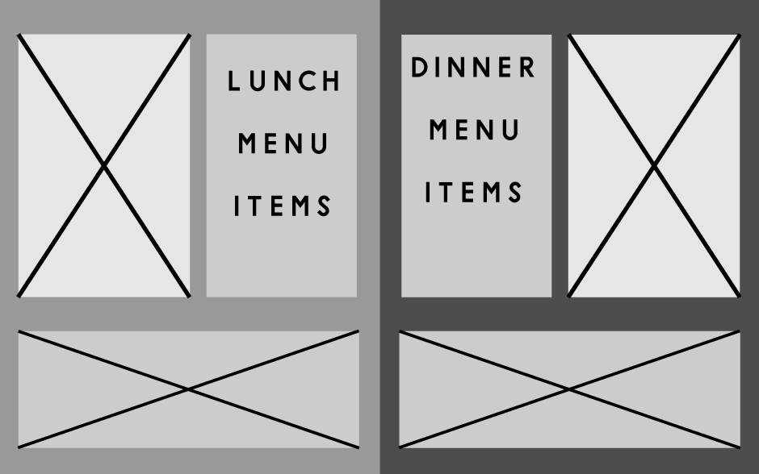

This desktop layout will use parallax scrolling to go from section to section. Images will become a gallery that slides, and will match up with the menu item that is clicked on.
When entering this page, the user will land on the Lunch Page or the Dinner page depending on the current time. The individual navigation bar items on the landing pages will alter the menu content with separate images.
For example, clicking the "Desserts" button will alter the slideshow to become desserts rather than standard food items.
There will be a switch button in the description box that will shift from the "Lunch" section to the "Dinner" section. The website will also work with modern tablets by being able to "swipe" to the individual parts of the website.
